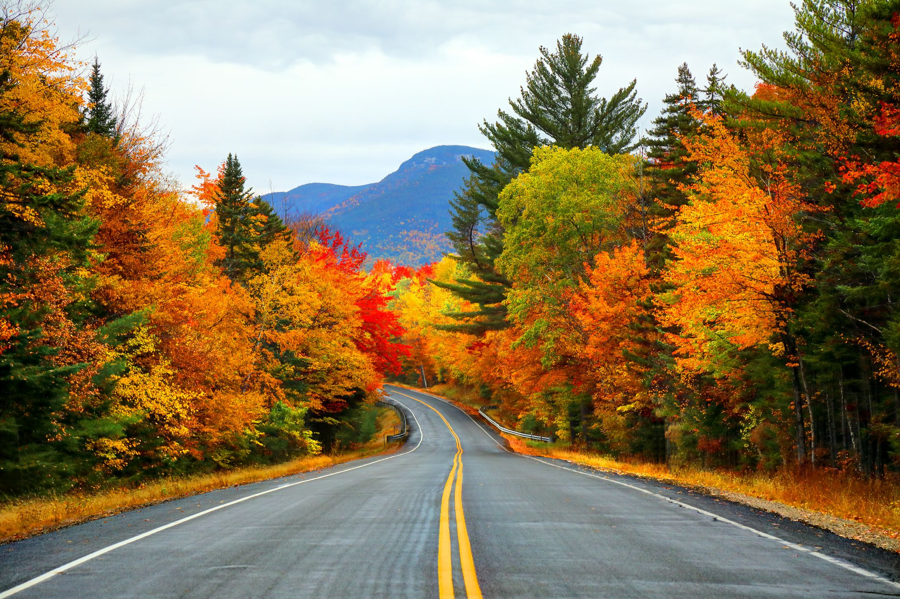

FALL
In the autumn, or fall, temperatures cool again. Plants may begin to grow dormant. Animals might prepare themselves for the upcoming cold weather, storing food or traveling to warmer regions. Various cultures have celebrated bountiful harvests with annual festivals. Thanksgiving is a good example. "Thanksgiving in the United States is a historical commemoration but it has a spiritual dimension strongly associated with homecoming and giving praise for what has been bestowed upon us," Cristina De Rossi, an anthropologist at Barnet and Southgate College in London, told Live Science.
Autumn, also known as fall in American English, is one of the four temperate seasons. Outside the tropics, autumn marks the transition from summer to winter, in September or March. Autumn is the season when the duration of daylight becomes noticeably shorter and the temperature cools considerably.